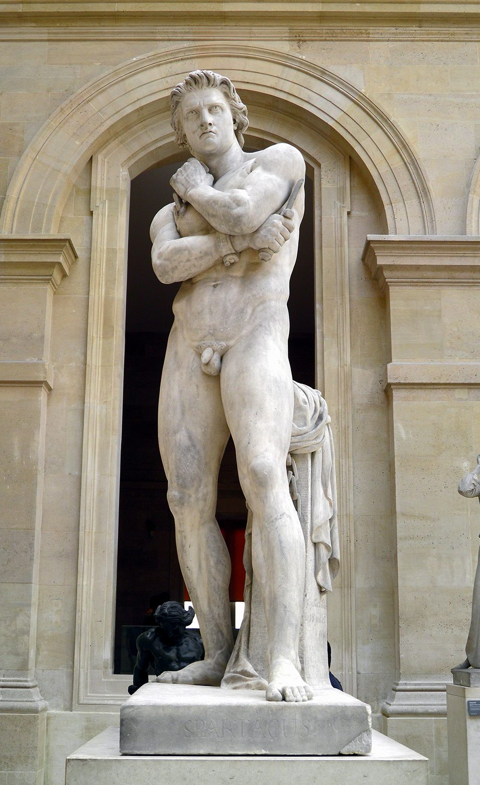
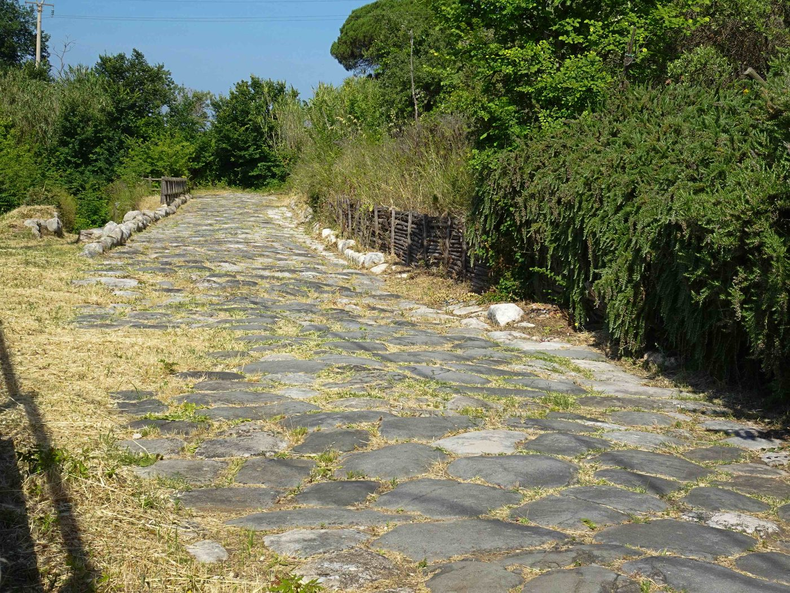

Unit 6 · Slavery in ancient Rome · Lesson 14
Spartacus II: aims, significance and interpretations
What did the rebels aim to do, and what did the revolt matter for? Ancient writers and modern historians disagree, so how do you weigh them?
Year 11 Ancient History · Present with → or space · Read on a phone with R

Connect · 3 minutes · books closed · everyone writes
Two Roman commanders who fought Spartacus, and what happened to each
Name two Roman commanders who fought Spartacus, and say what happened to each. Say which writer tells us.
Frame: “… was sent against the rebels and … . Plutarch (or Appian) says …”
Today asks what Spartacus aimed to do, and what the revolt mattered for. Keep asking: who is speaking, and from whose side?
Learning intentions and success criteria · 2 minutes
Today’s goals
- assess the aims and significance of the revolt of Spartacus
- weigh historians’ interpretations against the ancient evidence
- compare what Plutarch and Appian say Spartacus aimed to do
- assess the revolt’s significance for different groups
- weigh two interpretations and judge which the evidence better supports
Syllabus outcomes: AH-11-03 explains the role and significance of forces, features, events, individuals and groups in shaping the past · AH-11-04 accounts for the different perspectives of individuals and groups in their historical context · AH-11-05 analyses different types of sources for evidence to support a historical account or argument · AH-11-07 communicates historical understanding, applying historical knowledge, terms and concepts. Life Skills: AH-LS-06 investigates people, events or developments of the ancient world · AH-LS-11 communicates information about the past using historical terms and concepts.
Note-making · the routine for the whole course
How to structure your notes
questions and key terms, written after
short phrases, arrows (→ leads to), abbreviations (c. = about; ↔ = compared with)
- 1A new pageA cue column about a quarter of the page wide; title and date at the top; room for a summary at the bottom.
- 2Listen and look, then writePhrases, not sentences. Today, for every claim: which writer or historian says so, and where.
- 3Write your own notes at the ✎ checkpointThen compare with the model notes, one row at a time. Add what you missed in a second colour.
- 4Write the cue questions afterwardsUse exam verbs: compare, explain, assess. To revise, cover your notes and answer the cues.
- 5Finish with a three-sentence summaryOne checkpoint today, after the aims. The aims grid in your booklet is your notes for the rest of the first half.
Key vocabulary · add to the unit word wall
Words for judging the revolt and for writing about it
| From the unit list | Meaning |
|---|---|
| Assess | ‘Make a judgement of value, quality, outcomes, results or size.’ (NESA, Glossary of key words) Department advice: make and support a judgement, weighing evidence on both sides. |
| Interpretation | A historian’s evidence-based explanation of the past, which others may contest. |
| Ovation | A lesser triumph; Crassus received one ‘for a servile war’ (Plutarch, Crassus 11.8). |
| Crucifixion | Execution on a cross, used by Rome for enslaved people and rebels; 6,000 after Spartacus’s defeat, on Appian’s figure (1.120). |
| Added today | Meaning |
|---|---|
| Significance | How much something mattered. Department advice: always ask for whom, for what and for how long. |
| Aim | What a person set out to do. For Spartacus, only writers who were not there tell us. |
| Representation | A later picture or retelling of the past, such as a statue made centuries on: evidence of what its maker imagined, not direct evidence of the past. |
| Extirpate | To root out and destroy completely; Pompey’s word, as Plutarch reports it (Crassus 11.7). |
1 · The aims problem · I do — what each writer says Spartacus aimed to do, and where they agree · 3 minutes
What did Spartacus aim to do? Two writers, one extract each
… but he took a proper view of the situation, and since he could not expect to overcome the Roman power, began to lead his army toward the Alps, thinking it necessary for them to cross the mountains and go to their respective homes, some to Thrace, and some to Gaul.
But his men were now strong in numbers and full of confidence, and would not listen to him, but went ravaging over Italy.
Plutarch, Life of Crassus 9.5–6, about 170–190 years after the revolt · trans. B. Perrin (Loeb, 1916)
Spartacus endeavoured to make his way through the Apennines to the Alps and the Gallic country, but one of the consuls anticipated him and hindered his flight while the other hung upon his rear.
Spartacus sacrificed 300 Roman prisoners to the shade of Crixus, and marched on Rome with 120,000 foot …
Spartacus changed his intention of marching on Rome.
Appian, Civil Wars 1.117, about two centuries after the revolt · trans. H. White (Loeb, 1913)
- 1Both: the Alps firstPlutarch: toward the Alps, then home. Appian: “the Alps and the Gallic country”.
- 2Only Appian: the march on RomeHe “marched on Rome” with 120,000 (a round number: a claim), then “changed his intention”.
- 3Only Plutarch: the menHis men “would not listen to him”.
1 · The aims problem · I do — what each writer could know, and whose side they write from · 2 minutes
Neither was there, and both write from Rome’s side
… the sources are all subject to limitations, being relatively late and unconcerned with the servile perspective of events for its own sake …
K. R. Bradley, Slavery and Rebellion in the Roman World, 140 B.C.–70 B.C. (Indiana University Press, 1989), Prologue, p. xii
… the characterization of the rebellions as slave wars is a characterization derived not from the dissidents themselves but from representatives of the social order they threatened.
K. R. Bradley (1989), p. 125
- 1Neither was therePlutarch wrote about 170–190 years after the revolt, Appian about two centuries after. Both used earlier accounts that are lost (Bradley, pp. 137–138).
- 2Both write from Rome’s sidePlutarch’s subject is the Roman general Crassus; Appian’s is Rome’s civil wars. Neither gives the rebels’ own words.
- 3So an “aim” is a reportWhat we are told Spartacus wanted comes from outsiders, so it needs a hedge and a name: “Plutarch says …”.
Neither writer gives the rebels’ own words. What does that do to a claim about their aims?
It makes the claim an outsider’s report or inference, so it should be attributed (“Plutarch says …”) and hedged (“probably”, “suggests”), and it cannot be treated as the rebels’ own statement of what they wanted.
Notes checkpoint · I do · 2 minutes · cue: aims and sources
What do the two extracts and the two historians’ points show?
2 · Aims and significance · We do — pairs complete the aims grid from Plutarch 9.5–6 and Appian 1.117 · 4 minutes
Plutarch | Appian: what does each say, and what can a historian conclude?
For each row, fill in each writer’s words, then write what a historian can conclude, with a hedge.
| Row | Plutarch (Crassus 9.5–6) | Appian (Civil Wars 1.117) | What a historian can conclude |
|---|---|---|---|
| First aim | “began to lead his army toward the Alps”, so that his men could “go to their respective homes, some to Thrace, and some to Gaul” | “endeavoured to make his way through the Apennines to the Alps and the Gallic country”; a consul “hindered his flight” | Both have the Alps first, so a plan to leave Italy is the best-supported aim: probably, not certainly, because both are late writers on Rome’s side. |
| Rome | no march on Rome by Spartacus in these lines | “marched on Rome with 120,000 foot”, then “changed his intention of marching on Rome”: he did not think himself “ready as yet for that kind of a fight” | Only Appian has it, and he has Spartacus give it up. One late writer and a round number: possible, not established. |
| His men | his men “would not listen to him, but went ravaging over Italy” | says nothing in these lines about his men refusing; reports Spartacus’s reason for giving up Rome: “no city had joined him, but only slaves, deserters, and riff-raff” | Only Plutarch says the men overruled him. It shows what Plutarch thought of the army, but nothing else tests it: one writer, so a hedge. “Riff-raff” is Appian’s word (in White’s translation): Rome’s side. |
2 · Aims and significance · We do — pairs apply the criteria · discussion only · 4 minutes
Significant for whom, for what, for how long?
- For whom? Rome · enslaved people · people later
- For what? what the revolt changed, or showed
- For how long? a moment, or longer
- Choose one group.
- For that group, what does one source show the revolt changed, or showed?
- For how long? What does the source not show?

… so he could write to the senate that in open battle, indeed, Crassus had conquered the slaves, but that he himself had extirpated the war.
… it was thought ignoble and mean in him to celebrate even the minor triumph on foot, called the ovation, for a servile war.
Plutarch, Life of Crassus 11.7–8, early 2nd century CE · trans. B. Perrin (Loeb, 1916). “He” in the first line is Pompey; the second line is about Crassus.
The body of Spartacus was not found.
… they all perished except 6000, who were captured and crucified along the whole road from Capua to Rome.
Appian, Civil Wars 1.120, about the middle of the 2nd century CE · trans. H. White (Loeb, 1913). A round number: a claim by a writer who was not there.
2 · Aims and significance · We do — opinion continuum · discussion only · 3 minutes
“Spartacus’s revolt changed nothing.” Where do you stand?
- Place a sticky note (or stand) where you stand.
- Say for whom, and name one source that moved you.
- Cold call: one voice from each end, then one from the middle: what would change your mind?
“I place myself at … because … shows that, for …, the revolt … ”
The Roman slave wars were not revolutionary mass movements in any sense, but to a large extent historical accidents precipitated by a combination of circumstances that never again reappeared in the long history of slavery in the Roman world.
K. R. Bradley (1989), p. 126
No answer is shown: a continuum is not a verdict. You will defend a judgement in your paragraph.
3 · You do · Writing focus · 7 minutes · I do → We do → apply
Writing focus: set two interpretations against each other, then judge
Attribute each view to who holds it, set them against each other, then judge which the evidence better supports, and say why.
Worked example · written for this lesson · on the rebels’ aims, not on significance
Bradley notes that some historians have portrayed Spartacus as “a revolutionary hero of the historical class struggle”, but he argues that the slave wars “were not revolutionary mass movements in any sense”; Plutarch’s and Appian’s reports that Spartacus first made for the Alps better support Bradley, because they suggest a leader trying to leave Italy, not to remake Roman society.
K. R. Bradley (1989), p. xi (his summary of others’ views) and p. 126 (his own view)
Attribute: the first view is reported as others’, with a reporting verb (‘notes’, ‘have portrayed’)
Contrast: ‘but’ sets his own view against it, in his own words
Judge: which the evidence better supports, with a hedge (‘suggest’) and a reason (‘because’)
New evidence on the same aims: Plutarch says Spartacus’s men “would not listen to him, but went ravaging over Italy” (9.6). Write one sentence that sets the same two views against each other and judges which this evidence better supports.
Frame: “[X] argues …, whereas [Y] …; [evidence] better supports …, because …”
Each view attributed to who holds it · the two set against each other (“whereas”, “but”) · the evidence named, with its writer · a judgement with a hedge, and a because that comes from the evidence · what the evidence cannot show. Either view can be defended: the because decides.
In the Evaluate move of your paragraph, set two interpretations against each other and judge which the evidence you have used better supports. Your Writing toolkit (booklet pages 3–4): attribution verbs.
The model above judges the rebels’ aims; your Evaluate move judges significance, from your own evidence, and may go either way.
3 · You do · 21 minutes · check the deconstruction (1) · then write one paragraph (20 minutes)
Assess the significance of the revolt of Spartacus.
What does this question ask you to do? Check your deconstruction.
- Verb
- assess: NESA, Glossary of key words: ‘Make a judgement of value, quality, outcomes, results or size.’ Department advice: judge how much it mattered, and weigh evidence for and against
- Topic
- the significance of the revolt: what it mattered for, to whom and for how long; not a retelling of the revolt
- Limits
- the revolt of 73–71 BCE; the evidence on your evidence sheet (Plutarch, Appian and two interpretations by Bradley); you choose which group or groups to judge, and say so; not the Sicilian wars
- Do
- one paragraph in five moves: a Judge that names a degree and who it is for; evidence, each source named, round numbers treated as claims; analysis using for whom, for what, for how long; an Evaluate move that weighs one interpretation against the evidence; a Resolve that returns to your degree
Jot your plan in the first minutes of writing time. In the HSC, reading time is for thinking only. NESA’s 2027 HSC student guide says: “You must not write on or mark your exam in any way or use any equipment (including highlighters).”
- Plan (first 3 minutes): your degree and the group it is for · your evidence, each source named · the interpretation you will weigh.
- Write: Judge → Evidence → Analyse → Evaluate → Resolve. In your Evaluate move, set two interpretations against each other (Writing focus).
Plan template: a box for each move. The significance criteria card: for whom? for what? for how long? The synthesis frame: “[X] argues …, whereas [Y] …; [evidence] better supports …, because …” The model from the Writing focus, kept visible. Your Writing toolkit (booklet pages 3–4): the modality scale and degree words.
Your teacher gives you the opening of a modern history of Spartacus (B. D. Shaw, 2001, or B. Strauss, 2009). Analyse how the historian’s question shapes the Spartacus he gives us. Do this before or after your paragraph.
3 · You do · your evidence sheet · keep it open while you write
Your evidence: two ancient writers and two interpretations
… so he could write to the senate that in open battle, indeed, Crassus had conquered the slaves, but that he himself had extirpated the war.
… it was thought ignoble and mean in him to celebrate even the minor triumph on foot, called the ovation, for a servile war.
Plutarch, Life of Crassus 11.7–8, early 2nd century CE · trans. B. Perrin (Loeb, 1916) · “he” is Pompey in the first line
The body of Spartacus was not found.
… they all perished except 6000, who were captured and crucified along the whole road from Capua to Rome.
Appian, Civil Wars 1.120, about the middle of the 2nd century CE · trans. H. White (Loeb, 1913) · a round number: a claim
Some have detected forms of primitive communism in the rebels’ actions, and Spartacus in particular has been portrayed as a champion of the oppressed in Roman society—a revolutionary hero of the historical class struggle.
K. R. Bradley, Slavery and Rebellion in the Roman World, 140 B.C.–70 B.C. (Indiana University Press, 1989), Prologue, p. xi · the views of “some” historians, which Bradley reports
The Roman slave wars were not revolutionary mass movements in any sense, but to a large extent historical accidents precipitated by a combination of circumstances that never again reappeared in the long history of slavery in the Roman world.
K. R. Bradley (1989), p. 126 (the last page of his main chapters)
Check · hinge · 4 minutes · vote on “3, 2, 1, show”
Which claim does Plutarch support?
… but he took a proper view of the situation, and since he could not expect to overcome the Roman power, began to lead his army toward the Alps, thinking it necessary for them to cross the mountains and go to their respective homes, some to Thrace, and some to Gaul.
But his men were now strong in numbers and full of confidence, and would not listen to him, but went ravaging over Italy.
Plutarch, Life of Crassus 9.5–6 · trans. B. Perrin (Loeb, 1916)
- ASpartacus wanted to abolish slavery in every part of Italy.
- BSpartacus wanted his men to cross the Alps and go home.
- CSpartacus wanted to march on Rome and lay siege to the city.
- DSpartacus wanted his men to keep ravaging the Italian countryside.
A reads a modern view into the extract: it says nothing about slavery · C is Appian’s march on Rome, and neither writer has a siege · D is what Plutarch says his men did, against his plan.
Check · exit ticket · 4 minutes · before you leave
Your synthesis ticket
Copy the sentence from your paragraph where you weighed two interpretations, then finish: “My sentence sets … against … and judges that … better supports …, because …”
Both views attributed to named people, in a present-tense reporting verb. A contrast word such as “whereas”. Evidence named with its writer, not just “the sources”. A hedged judgement with a reason that comes from the evidence. One thing you would change.
A Judge that names a degree (largely, partly, only to a limited extent) and says who it is for. Evidence from the ancient writers and a historian, each named, with round numbers treated as claims. Analysis that uses the criteria: for whom, for what, for how long. An Evaluate move that attributes two interpretations, weighs them against the evidence and says what the evidence cannot show. A Resolve that returns to the degree and the group, with no new evidence.
Then check yourself against today’s three “I can” statements. Next lesson: Lesson 15.
Finish your notes If time · or at home
Summary: three sentences
- What do Plutarch and Appian each say Spartacus aimed to do, and why can’t we be sure?
- What three questions does significance ask?
- How do you weigh two interpretations?
Plutarch and Appian both have Spartacus make first for the Alps; only Appian has a march on Rome, which he gave up, and only Plutarch says his men would not listen, so any claim about his aims is a hedged report by writers who were not there and wrote from Rome’s side. Significance is always for whom, for what and for how long, so a judgement names the group it is for. To weigh two interpretations, attribute each, set them against each other, and judge which the evidence better supports, with a reason and a hedge.
Practice and review · 1 of 4 · true, false, justify
True or false? Justify your answer
- 1Both Plutarch and Appian have Spartacus make first for the Alps. True — Plutarch 9.5 (he began to lead his army toward the Alps); Appian 1.117 (“the Alps and the Gallic country”).
- 2Appian says Spartacus’s men would not listen to him. False — Plutarch says so (9.6). Appian reports Spartacus’s reason for giving up the march on Rome: his force was not suitably armed and no city had joined him.
- 3Bradley says Spartacus was “a revolutionary hero of the historical class struggle”. False — that is Bradley’s summary of how some historians have portrayed Spartacus (Prologue, p. xi). His own view (p. 126) is that the slave wars “were not revolutionary mass movements in any sense”.
- 4Appian says the body of Spartacus was found and buried. False — “The body of Spartacus was not found” (1.120).
- 5Plutarch reports that Pompey could claim that he himself had “extirpated the war”. True — Plutarch 11.7: Pompey could write to the senate “that in open battle, indeed, Crassus had conquered the slaves, but that he himself had extirpated the war”. It is Plutarch’s report of Pompey’s claim.
- 6Appian’s “6000” is an exact count of the rebels who were crucified. False — it is a round number given by a writer who was not there: a claim, not a count.
Practice and review · 2 of 4 · weighing interpretations
Repair a sentence, then tell three sentences apart
New evidence on the rebels’ aims: Appian says Spartacus gave up marching on Rome because “no city had joined him”.
A student wrote: “Some historians say Spartacus was a revolutionary hero and Bradley says he wasn’t, and Appian says he gave up marching on Rome.” Rewrite it so that it attributes both views, sets them against each other, and judges which the evidence better supports.
Bradley notes that some historians have portrayed Spartacus as “a revolutionary hero of the historical class struggle”, whereas he argues that the slave wars “were not revolutionary mass movements in any sense”; Appian’s report that Spartacus gave up marching on Rome because “no city had joined him” may better support Bradley, because it suggests a leader weighing his chances, although Appian, writing from Rome’s side, cannot show us what Spartacus intended.
- “Bradley says some historians call Spartacus a revolutionary hero.”
- “Historians who call Spartacus a revolutionary hero are biased, so their view is wrong.”
- “Some historians portray Spartacus as a revolutionary hero, whereas Bradley argues the slave wars were not revolutionary mass movements; Plutarch’s report that his men would not listen better supports Bradley, because it suggests there was no shared plan.”
Sentence 3 weighs: it attributes both views, sets them against each other and judges with evidence, a hedge and a reason. Sentence 1 only reports one view. Sentence 2 only dismisses: “biased, so wrong” gives no evidence and weighs nothing.
Practice and review · 3 of 4 · extension
A statue and a historian: two ways of picturing Spartacus
The statue (a representation, dated 1830) and the historians Bradley reports (in 1989) each give us a Spartacus. Analyse how each pictures him, and what neither can tell us about the revolt of 73–71 BCE.
Some have detected forms of primitive communism in the rebels’ actions, and Spartacus in particular has been portrayed as a champion of the oppressed in Roman society—a revolutionary hero of the historical class struggle.
K. R. Bradley (1989), Prologue, p. xi · his summary of other historians’ views
It says what each gives us, with the date: a sculptor’s picture made about 1,900 years later, and a historian reporting how others portrayed him. It treats the statue as evidence of how a later age imagined Spartacus, not of what he wanted, and keeps the hedge on anything it says about the sculptor’s purpose. It attributes the “revolutionary hero” view to the historians Bradley reports, not to Bradley. It says what neither gives: the rebels’ own words. It ends with a degree of confidence, not a yes or no.
Practice and review · 4 of 4 · cover your notes and answer from memory
Quick checks
- What do both writers have Spartacus do first, after beating the praetors? Make for the Alps: Plutarch 9.5 (and so home); Appian 1.117 (“the Alps and the Gallic country”).
- What does only Appian say Spartacus did about Rome? He “marched on Rome” with 120,000 foot (a round number: a claim), then “changed his intention”.
- What does only Plutarch say about Spartacus’s men? That they “would not listen to him” and went ravaging over Italy (9.6).
- Why can’t we be sure what the rebels aimed to do? Neither writer was there (Plutarch about 170–190 years later, Appian about two centuries), both used lost sources and both write from Rome’s side, “unconcerned with the servile perspective” (Bradley).
- What three questions does significance ask? For whom? For what? For how long?
- Whose view is “a revolutionary hero of the historical class struggle”? Some historians’ view, as Bradley summarises it (Prologue, p. xi). Bradley’s own view is on p. 126.
- What does “better supports” need after it? A reason from the evidence (“because …”), a hedge, and the writer named.
Sources and credits
Where everything comes from
Plutarch, Life of Crassus 9–11: trans. B. Perrin (Loeb Classical Library, vol. III, 1916, public domain), LacusCurtius. Appian, Civil Wars 1.116–120: trans. H. White (Loeb, 1913, public domain), LacusCurtius.
Modern historian, quoted briefly: K. R. Bradley, Slavery and Rebellion in the Roman World, 140 B.C.–70 B.C. (Indiana University Press, 1989), pp. xi–xii (Prologue), 124–126, 136–138 (Appendix I, the literary sources) and 142 (Appendix III). The NESA Glossary of key words (definitions quoted word for word) and the NESA 2027 HSC student guide, p. 19 (step 3, “Reading time”).
Outcomes and content: NSW Education Standards Authority (NESA), Ancient History 11–12 Syllabus (2024). © NESA.
- Marble statue of Spartacus by Denis Foyatier, dated 1830 (Louvre, Paris) · Photo: Carole Raddato · CC BY-SA 2.0 · source
- A stretch of the Via Appia at Mondragone (ancient Sinuessa), between Capua and Rome · Photo: Tery14 · CC BY-SA 4.0 · source
,_Louvre_Museum_(8269334205).jpg){kind=link}

Both photographs were resized for the web; the statue is shown whole. They are shared under the licences shown. The statue (Denis Foyatier, 1830) and the road are not evidence for 73–71 BCE: the statue is a representation, and the road is shown as it survives.